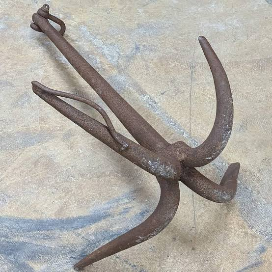
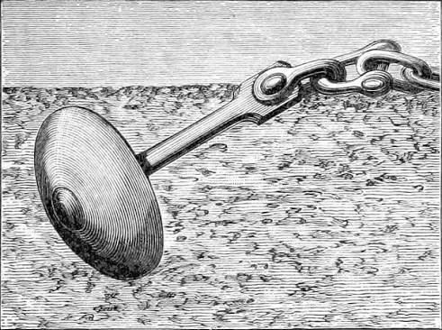

To jest link do kotwicy dolnej

Zdefiniowanie kotwicy w konkretnym miejscu dokumentu HTML
i wskazanie tej kotwicy w linku do tego dokumentu,
spowoduje po jego otwarciu, przewinięcie -
tak aby wiersz zawierający kotwicę znajdował się jak najbliżej górnej krawędzi okna przeglądarki.
Aby było co przewijać dodamy dwa rysunki kotwic oraz linie puste,
a następnie, zdefiniujemy dwie kotwice.
To jest link do kotwicy górnej
